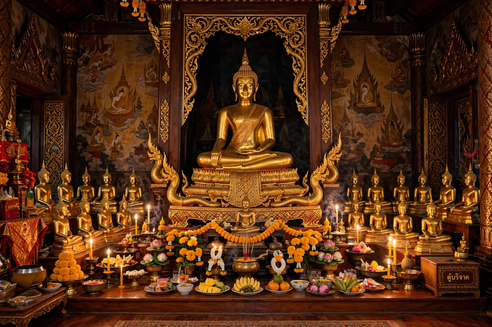

From Wikipedia, the free encyclopedia
| Theravada | |
|---|---|
| Type | School of Buddhism ('School of the Elders') |
| Regions | Sri Lanka, Thailand, Myanmar, Cambodia, Laos |
| Scriptures | Pali Canon (Tipitaka) |
| Goal | Arhatship; nirvana |

Theravada ('Teaching of the Elders') is the school of Buddhism dominant in Sri Lanka and Southeast Asia (Thailand, Myanmar, Cambodia, Laos), claiming descent from the earliest Buddhist community and preserving its canon in Pali — the Tipitaka, closed in written form in Sri Lanka in the 1st century BC. Its ideal is the arhat who, following the Buddha's path of ethics, meditation and wisdom through the Visuddhimagga's classic manual, attains Nirvana and ends rebirth.
Theravada societies ordain most young men temporarily as monks; the forest tradition (Ajahn Chah, Ajahn Mun) revived austere meditation, while the vipassana movement (Mahasi Sayadaw, S. N. Goenka) carried insight meditation worldwide and into secular mindfulness. Its conservative self-image contrasts with Mahayana's bodhisattva ideal, though mutual influence is old and growing.